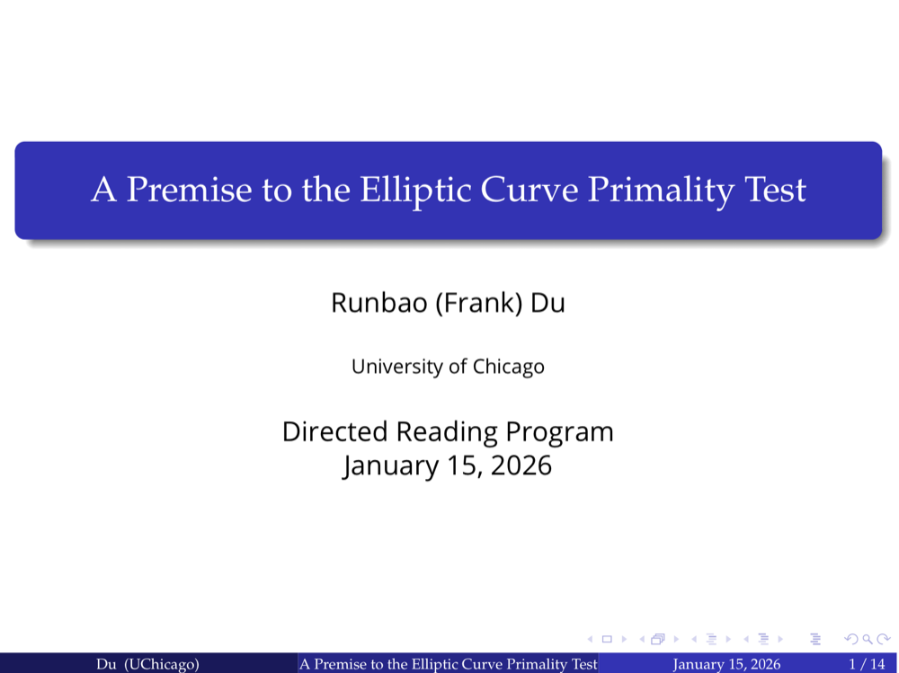

Runbao (Frank) Du

我在芝加哥大学读大三，主修 Computational and Applied Mathematics，辅修天体物理。我对 AI 的应用非常感兴趣，特别是 AI 在音乐，音频分析和安全上的应用，以及 AI 在哲学中的讨论。在平时，我喜欢制作音乐和写诗，并偶尔练习打字（现在没有之前那么痴迷了）。我在闲暇时喜欢攀岩（抱石），丢飞盘，跑步。做计划是我生活中必不可少的一部分。我喜欢计划生活中的所有事情。从某种程度上来说，我觉得我的计划多到已经开始反噬我的效率（真的）。我也喜欢思考庞大的问题，喜欢想象极其宏大的理想，并假装自己有解决方法。其实我连这周的数学作业都不会做。
如果你有任何问题或想法，欢迎联系我！
邮箱 runbao (at) uchicago (dot) edu
个人简历
最后更新：2026 年 4 月
科研
开源音乐生成模型：MuseV2 正在进行
与复旦大学自然语言处理实验室从零搭建一个可控的文本生成音乐大模型。目前正在进行数据准备工作。已构建一个确定性的级联 / DAG 采样器，可在 17 个曲风大类 / 99 个子风格中生成结构化的歌曲规格，各字段覆盖均衡且彼此条件依赖。
AI 音乐检测的对抗性分析与人性的边界 正在进行
构建一个严谨、去混淆的 AI 生成音乐检测器（针对 Suno 及其他模型），并通过生成器–检测器的对抗循环来探究：哪些机器制造音乐的特征只是可被抹去的表层痕迹，哪些是难以去除的深层指纹。指导：复旦大学 Qile He。导师：Prof. Blase Ur。
价值负载的角色描述对大语言模型价值推断与任务完成的影响 2025 年 11 月 – 2026 年 5 月
在芝加哥大学 SUPERGroup 实验室研究大语言模型中的价值推理。
摘要
人们越来越多地把日常任务（比如修改邮件、征求推荐建议）交给大语言模型（LLM）来完成。由于完成这些任务时隐含的许多决策都反映了人的价值观，我们想知道：一段简短的用户自我描述（persona / 角色设定）会在多大程度上影响 LLM 完成任务的方式。在第一个实验中，我们研究了 LLM 所推断出的价值观——我们测试的八个 LLM 从这 33 个角色设定中共推断出 2,583 个不同的价值观，并将其归纳为 162 个聚类。在第二个实验中，我们测试了这些角色设定如何影响八个 LLM 完成 33 项任务的方式。我们发现，几乎任何角色设定——即使看似与任务无关——都会改变 LLM 完成任务的方式；而与任务相关的角色设定造成的改变更大。换句话说，即使只是几句暗示特定价值观的话，也能让 LLM 以截然不同的方式完成同一项任务，这在个性化与刻板印象之间形成了张力。
芝加哥大学数学导读项目 2025 年 8 月 – 2026 年 1 月
学习代数几何以及其中有关椭圆曲线的内容，特别围绕椭圆素性测试的算法及证明。主要教材：Silverman， The Arithmetic of Elliptic Curves 。

项目
Audit Copilot — 面向多轨音频数据集的 LLM 智能体 2026 年 5 月 – 2026 年 7 月
参与搭建 Audit Copilot——一个为复旦大学音频与音乐技术实验室打造的内部 LLM 智能体工具，目标是为音乐生成模型整理一个大规模的中文流行音乐多轨数据集（人声、分轨、MIDI、混音工程文件）。它把过去审核人员对每首歌都要手动完成、耗时数小时的质检流程（文件命名、结构、格式、对齐、编排检查）自动化，用一个 LLM 智能体驱动 17 个状态的 SOP，并在需要主观判断（混音、速度、结构）时把控制权交回给人。我主要负责重新设计智能体系统提示词中 Phase-B 的人机协同 SOP，并精简了整个工作流。
诗宇 Shiyu — 一个可交互的三维诗歌宇宙 2026 年 5 月 – 2026 年 7 月
一个基于 WebGL 的诗歌宇宙——诗歌的主题是不同的恒星，诗是环绕其运行的系外行星，读者可以在一个可自由漫游的三维星系中探索、策展并发布作品。它最核心的设计挑战，是把三个通常彼此独立的领域融合成一个产品：合理的星体模拟、诗歌与文学节奏，以及一种既需科学可信度、又需文学质感的视觉美学。
2026 外滩黑客松多个赛道获奖。
Lyra：文字-音乐聊天机器人 2026 年 1 月 – 2026 年 5 月
独立搭建并上线 AI 音乐平台：用户上传歌曲后可与大模型对话，系统通过自研 Python 音频分析 Pipeline 提取特征，并调用 Claude和Google Gemini 图像模型实时生成可视化场景。
如要尝试Lyra 1.1，请联系润宝。
Prezuricle — 市场宣传工具 2023 年 8 月 – 2024 年 5 月
与 Jason Zhao (USC '27) 共同搭建一个调用多个大模型 API 的多模态工具，主要负责文字与音频、文字与图像等之间的转换。
目前仍保持每月 200+ 活跃用户。
音乐制作
专辑正在制作中，计划于 2026 年 12 月上线。
其他
失眠中
- 情绪有寿命吗？为什么有些情绪持续很久，而有些只存在于一瞬间？
- 我们会见证一场完美的辩论吗？完美指的是对所有参与辩论的概念的定义都达成绝对共识。
- 世界上是否存在一个绝对独立的思考者？一名绝对独立的思考者是一位所有思想的产生都完全来源于自己的思考者。
- 如何击败一个在任何时候都无所不知的人？
- 是否有一个问题，会让全人类站在同一立场？
- 是否存在一个影响程度的临界点，迫使我们开始权衡利弊？
- 是否可以在不使用专业术语的情况下解释一个非常艰深的学术话题？如果可以，这则信息的传输过程中会失去什么吗？
- 是否存在一个界限，将人类完全不可能做到的事与极其困难但仍可实现的事区分开？
我的时间管理方法
我从初二（或者初三）开始尝试制定计划，并练习自己的时间管理能力。我写过一本关于时间管理的书，但没有发行，觉得写得还不够好。
我认为一个好的计划最重要的两个特质是灵活和多向性。一个好的计划应该包含你想做和不想做的事情，而且它应该足够灵活。计划不应该引导你，而是由你来引导计划。
我在使用这些动物分类时，会牢记以下几点：
- 我每天应该至少完成 3 种动物。
- 我应该在每一天都对这些动物进行优先排序，这样我就能大致了解什么更紧迫，但无论如何，规则 1 仍然适用。
- 有些动物可能比其他动物需要更长的时间，这很正常。
- 有些任务可能属于多种动物。这很正常。完成该任务也意味着完成了多个动物。
- 如果一项任务不属于这些类别中的任何一个动物，那它就不应该被看作一个任务。
一张桌子